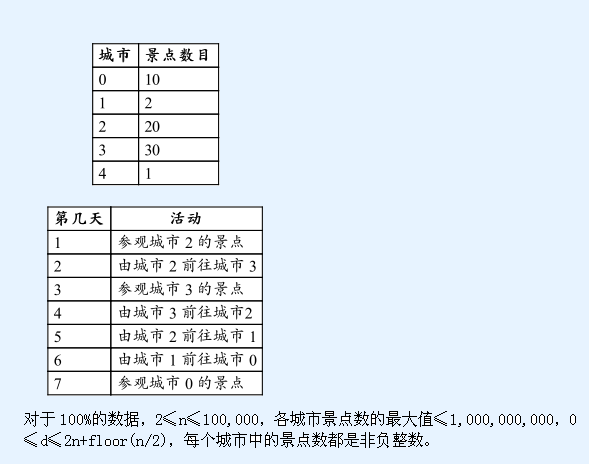

第1行: n, start, d.
第2行: attraction[0], ..., attraction[n-1].
n: 城市数。
start: 起点城市的编号。
d: 假期的天数。
attraction: 长度为n的数组；attraction[i] 表示城市i的景点数目，其中0≤i≤n-1。
健佳正在制定下个假期去台湾的游玩计划。在这个假期，健佳将会在城市之间奔波，并且参观这些城市的景点。
在台湾共有n个城市，它们全部位于一条高速公路上。这些城市连续地编号为0到n-1。对于城市i(0<i<n-1)而言，与其相邻的城市是i-1和i+1。但是对于城市 0，唯一与其相邻的是城市 1。而对于城市n-1，唯一与其相邻的是城市n-2。
每个城市都有若干景点。健佳有d天假期并且打算要参观尽量多的景点。健佳已经选择了假期开始要到访的第一个城市。在假期的每一天，健佳可以选择去一个相邻的城市，或者参观所在城市的所有景点，但是不能同时进行。即使健佳在同一个城市停留多次，他也不会去重复参观该城市的景点。请帮助健佳策划这个假期，以便能让他参观尽可能多的景点。
第1行: n, start, d.
第2行: attraction[0], ..., attraction[n-1].
n: 城市数。
start: 起点城市的编号。
d: 假期的天数。
attraction: 长度为n的数组；attraction[i] 表示城市i的景点数目，其中0≤i≤n-1。
输出一个整数表示健佳最多可以参观的景点数。
5 2 7
10 2 20 30 1
60假 设健佳有 7 天假期，有 5 个城市（参见下表），而且他由城市 2 开始。在第一天，健佳参观城市2的 20 个景点。第二天，健佳由城市 2 去往城市 3。而在第三天，健佳参观城市 3 的30 个景点。接下来的3天，健佳由城市 3 前往城市 0。而在第 7 天，健佳参观城市0的 10 个景点。这样健佳参观的景点总数是20+30+10=60，这是他由城市 2 开始、在 7 天假期内最多能参观的景点数目。
